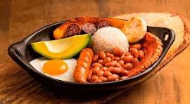

ü•ò Bandeja Paisa Tradicional

Ingredientes
- 1 taza de arroz blanco cocido
- 1 taza de frijoles rojos paisa
- 1 chorizo frito
- 1 porción de carne molida o en polvo
- 1 huevo frito
- 1 tajada de aguacate
- 1 porción de chicharrón crocante
- 1 plátano maduro frito
- 1 arepa pequeña
Preparación
- Cocina los frijoles con aliños tradicionales hasta que estén blandos.
- Fríe el chicharrón lentamente hasta que esté crocante.
- Prepara el arroz blanco y la carne molida con cebolla, tomate y comino.
- Fríe el chorizo, el plátano maduro y el huevo.
- En un plato grande, sirve ordenadamente todos los ingredientes.
- Acompaña con una arepa y una tajada de aguacate. ¡Buen provecho!